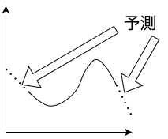

神戸大学の西野先生のこちらのツイートを見て気になったので「A Novel Method of Function Extrapolation Inspired by Techniques in Low-entangled Many-body Physics [Lambert Lin+, arXiv:2308.09001]」を読んでみました。
この論文の備忘録としてまとめました。
目次
概要
この論文ではentropy extrapolationという手法を提案している extrapolationとは外挿法という意味であり、ある範囲の数値データを基にして、その範囲外の数値を推定することである。

この手法は過去の時系列データをMPSに符号化し、エンタングルメントエントロピーが最小になるように未来の値を選ぶことにより行う外挿法の一種である. entropy extrapolationは線形予測法(比較対象とした既存手法)と比べて、関数の未来の値を予測するタスクに対してより正確であり、またノイズを含む関数に強いこと示された。
符号化法
n次元のベクトル\(y=(y_1, y_2, ..., y_n)\)で表される時系列データをMPSに符号化する方法を述べる。まず\(y\)をN qubitからなる量子状態の振幅に対応させる。一般にN qubitからなる量子状態は\(|\psi\rangle=\sum_{i_1, i_2, ..., i_N}C_{i_1, i_2, ..., i_N}|i_1i_2...i_N\rangle\)で表されるので\(n=2^k\)のとき\(k\) qubitからなる量子状態の振幅に\(y\)の要素が現れる。例えば\(y=(y_1, y_2, ..., y_8)\)のとき\(C_{i, j, k}\)は以下のようになる。
\[ C_{0, j, k}=\begin{bmatrix}y_1 & y_2 \\ y_3 & y_4 \end{bmatrix}, C_{1, j, k}=\begin{bmatrix}y_5 & y_6 \\ y_7 & y_8 \end{bmatrix} \] つまり\(y\)のインデックスを2進数表記した値を\(C_{i_1, i_2, ..., i_N}\)のインデックスに対応させれば良いことが分かる。これによりテンソルが構成できたのでこれをこちらで解説した手順にしたがって正準型のMPSを構成する.
手順
手順を述べる。\(y=(y_1, y_2, ..., y_n)\)という関数値列から\(y_{n+1}\)以降を予測する問題を考える。
- 対象の関数から適当なサンプリング周期で関数値列\(y=(y_1, y_2, ..., y_{2^q-1})\)を得る。\(y_{2^q}\)をランダムな値にセットする。\(q\)は大きいほど以前の値を利用できるため精度は高くなると考えられるが、計算量は増加する。
- 得られた\(2^q\)個のデータを以前にも述べた方法で\(q\) qubitの量子状態に符号化し、特異値分解を用いてMPS(正準型)にする。
- 各ボンドごとに特異値を正規化する。つまり\(\lambda_{ij}=(\lambda_1, \lambda_2, ..., \lambda_N)\)とすると\(p_k=\frac{\lambda_k^2}{|\lambda|^2}\)とすることで\(p_k\)は確率を表すことができる。
- 予測したい値\(y_{2^q}\)をRenyiエントロピー(後述)が最小化するように最適化する。Renyiエントロピーの計算は、全てのボンドで和をとることで行う。この方法は対象の関数が低エンタングル状態にマッピングされることに基づいている。三角波や正弦波、方形波など単純な周期関数は低エンタングル状態にマッピングされることが知られている。そのような関数に対しては新しく予測する点がエンタングルメントエントロピーが低いまま保たれるように振る舞うと仮定できる。
- 同様にすると\(y=(y_2, y_3, ..., y_{2^q})\)(\(y_{2^q}\)は上で予測した値)を用いて\(y_{2^q+1}\)を予測できる. 以降これを繰り返すことで\(y_{2^q+2}\)以降の系列も予測できる。
Renyiエントロピーに現れる\(\alpha\)はentropy extrapolationの精度を左右するパラメータであるため、調べたい関数によって適当な値に調整する必要がある。ただし通常、0.2〜0.3のとき安定して正確な予測が行えることが知られている。
論文内に詳しい言及はないが、MPSという低エンタングル状態にマッピングすることでノイズに強くなっていると考えられる。例えばフルエンタングルした状態にマッピングするとノイズに弱くなると考えられる。
Renyiエントロピー
本論文ではエンタングルメントエントロピー(より詳しい解説はこちら)としてシャノンエントロピーより一般的な定義であるRenyiエントロピーを用いている。
生起確率を\(p_i\)とするとRenyiエントロピー\(H(\alpha)\)は以下の式で定義される.
\[ H(\alpha) = \frac{1}{1-\alpha}\log{\sum_ip_i^\alpha} \]
ここで\(\alpha\geq0\)かつ\(\alpha\neq1\)である. また\(\alpha\rightarrow1\)の極限をとるとシャノンエントロピーに一致する.